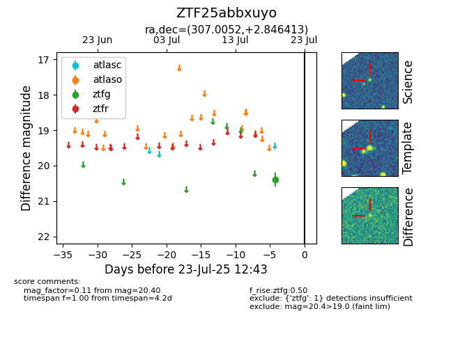

Target ZTF25abbxuyo at 2025-07-23 12:43, see:
FINK: fink-portal.org/ZTF25abbxuyo
Lasair: lasair-ztf.lsst.ac.uk/objects/ZTF25abbxuyo
ALeRCE: alerce.online/object/ZTF25abbxuyo
alt names
ZTF25abbxuyo (ztf,fink)
coordinates:
equatorial (ra, dec) = (307.0052,+2.84641)
galactic (l, b) = (47.1245,-19.93565)
photometry
last ztfg=20.40
1 ztfg detections
